|
<< Click to Display Table of Contents >> Navigation: Rus > Руководство разработчика > Как писать скрипты и триггеры в TrackStudio > Как собрать TrackStudio из исходного кода |
Для того, чтобы собрать TrackStudio, вам понадобятся: Java SDK и Apache Ant. Лучше, если у вас будет какая-нибудь IDE, но для небольших изменений можно обойтись и простым текстовым редактором.
Убедитесь, что Ant установлен правильно. Для этого наберите в командной строке
ant
Ответ должен быть таким:
Buildfile: build.xml does not exist!
Build failed
В случае, если Ant установлен неправильно, обратитесь к документации.
1.Скачайте исходный код TrackStudio.
2.Разверните исходный код TrackStudio в любую пустую папку.
3.В командной строке наберите ant war.
4.Дождитесь завершения сборки.
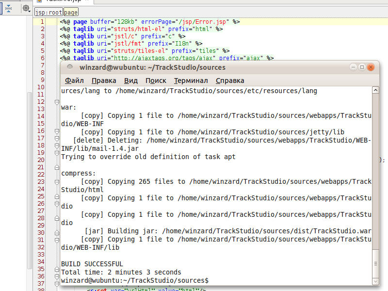
5.В случае удачной компиляции в папке dist должен появиться файл TrackStudio.war. Этот файл можно развернуть в директорию webapps/TrackStudio вашего резервного экземпляра TrackStudio.
6.После этого резервный экземпляр можно запустить и посмотреть, что получилось.
1.Скачайте исходный код TrackStudio.
2.Разверните исходный код TrackStudio в любую пустую папку.
3.Запустите IDEA.
4.Создайте новый проект, укажите в качестве его корня папку, в которую вы развернули архив с исходниками.
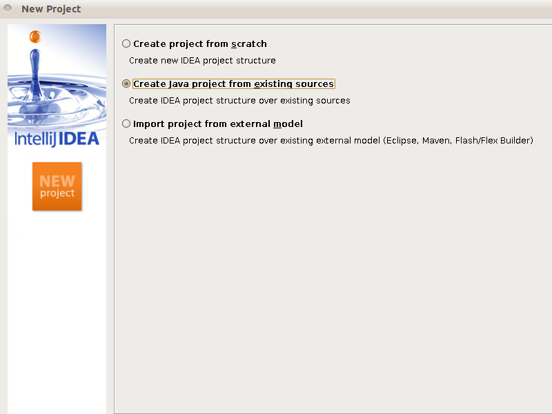
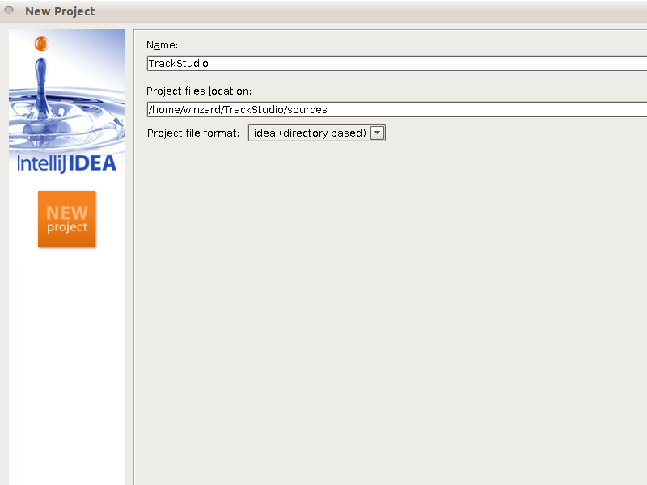
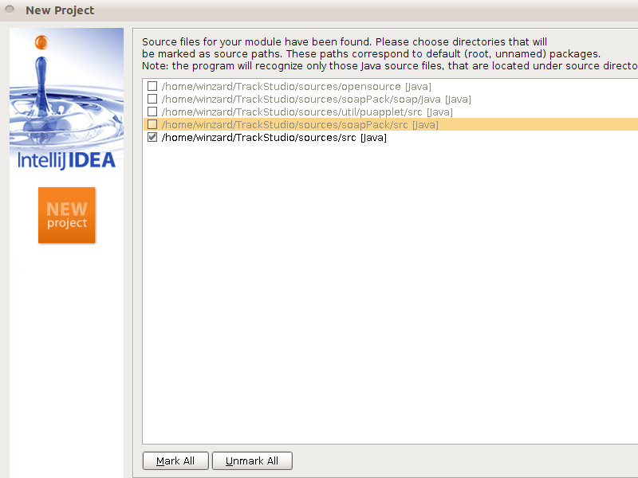
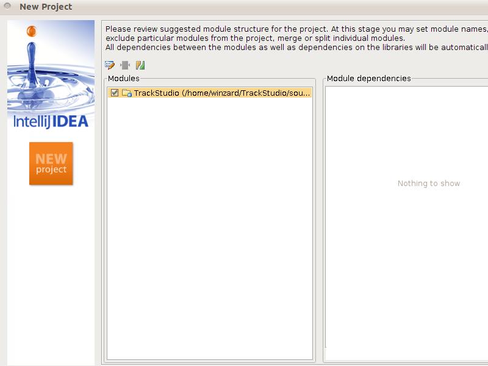
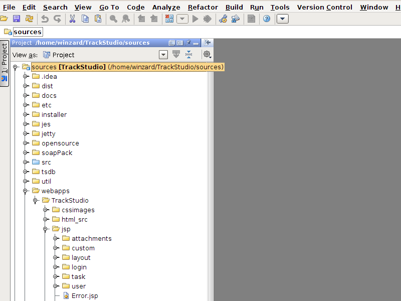
5.Перейдите в меню File->Project Structure.
6.Выберите вкладку Libraries.
7.Создайте библиотеку TrackStudio.
8.Добавьте туда все классы из папки webapps/TrackStudio/WEB-INF/lib.
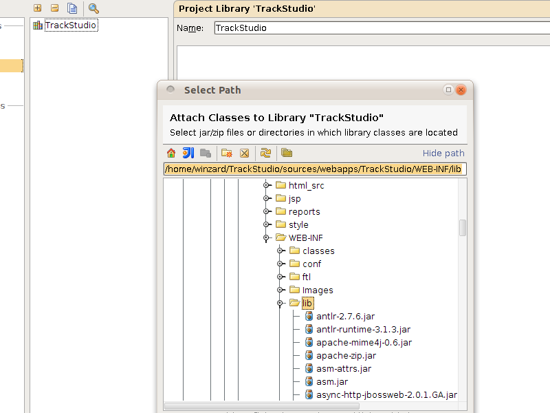
9.Затем откройте вкладку Ant Build (обычно она расположена справа на окне IDEA)
10.Выберите файл build.xml из папки, куда вы развернули исходные коды TrackStudio
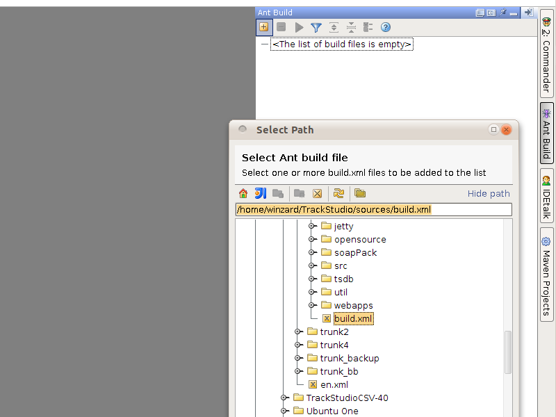
11.Запустите задачу war из списка заданий Ant Build
12.В случае удачной компиляции в папке dist должен появиться файл TrackStudio.war. Этот файл можно развернуть в директорию webapps/TrackStudio вашего резервного экземпляра TrackStudio.
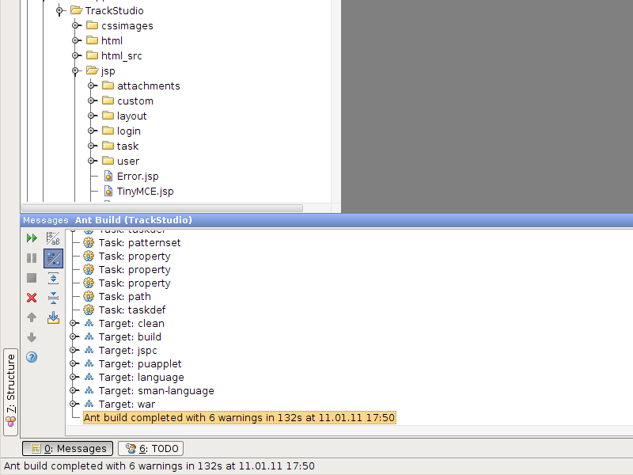
13.После этого резервный экземпляр можно запустить и посмотреть, что получилось.
Таким образом вы можете менять в TrackStudio практически всё, либо дорабатывать свои части.
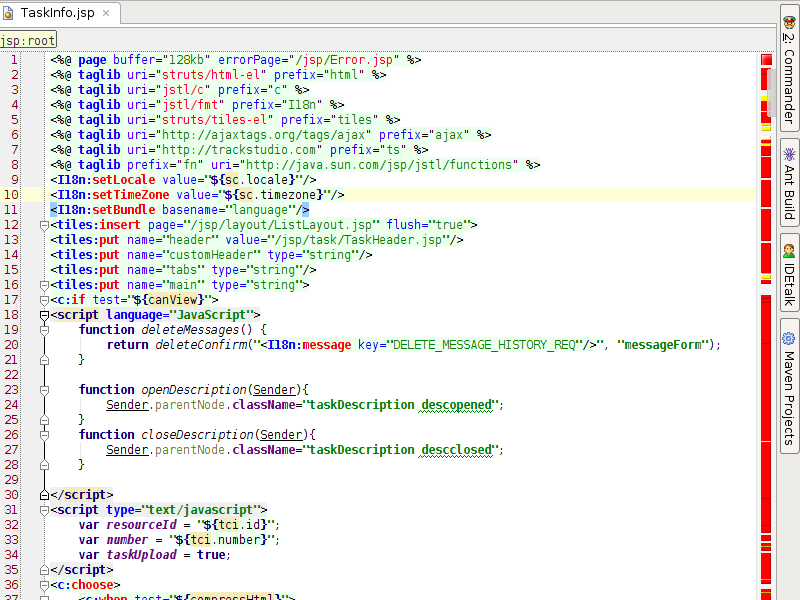
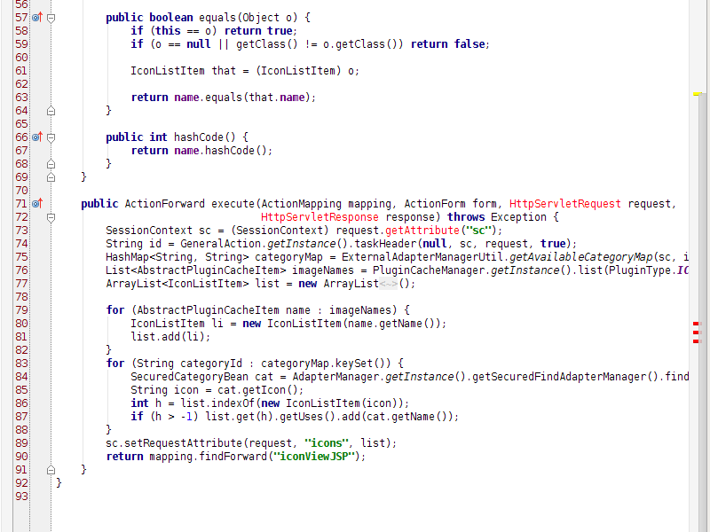
Для того, чтобы в IDEA было удобно редактировать наш код, нужно ее познакомить поближе с особенностями нашего проекта.
Для начала нужно подключить библиотеку javax.servlet.jar. Она находится в папке jetty/lib развернутых исходников.
1.В IDEA перейдите в меню File->Project Structure.
2.Выберите пункт Modules.
3.Выберите модуль TrackStudio.
4.Выберите вкладку Dependencies.
5.Нажмите кнопку Add и выберите Single Module Library
6.Отыщите javax.servlet.jar и добавьте ее в проект
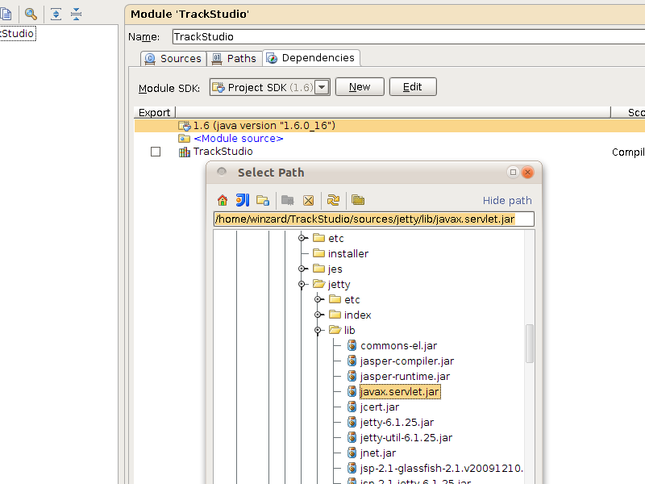
После этого исходный код будет выглядеть так:
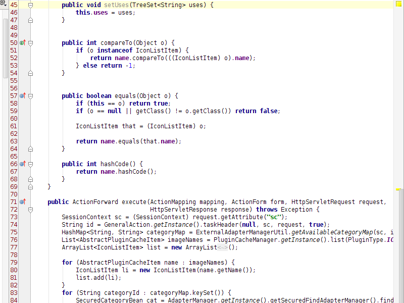
Настала очередь библиотек с тегами.
Нам нужно создать Facet для нашего проекта. Для этого:
1.В IDEA перейдите в меню File->Project Structure.
2.Выберите пункт Facets.
3.Выберите Web.
4.Добавьте новый facet к модулю TrackStudio
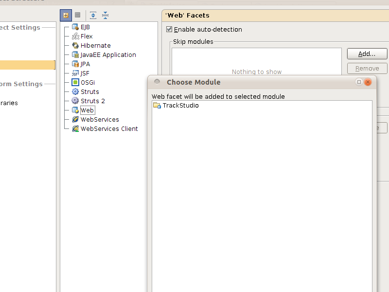
5.Укажите путь до файла web.xml: webapps/TrackStudio/WEB-INF/web.xml либо etc/webxml/web.jspc20.xml
6.Укажите путь до ресурсов (Web Resource Directory Path): webapps/TrackStudio/
7.Укажите там же Relative Path как /
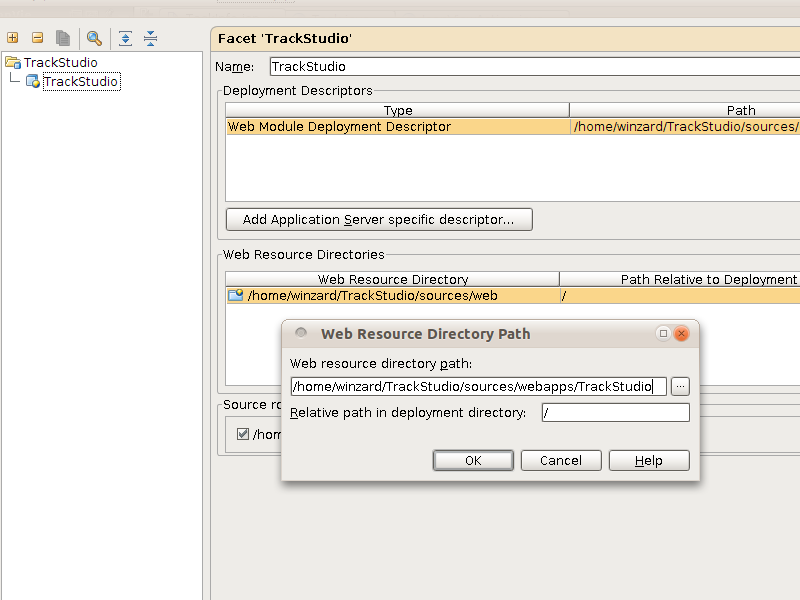
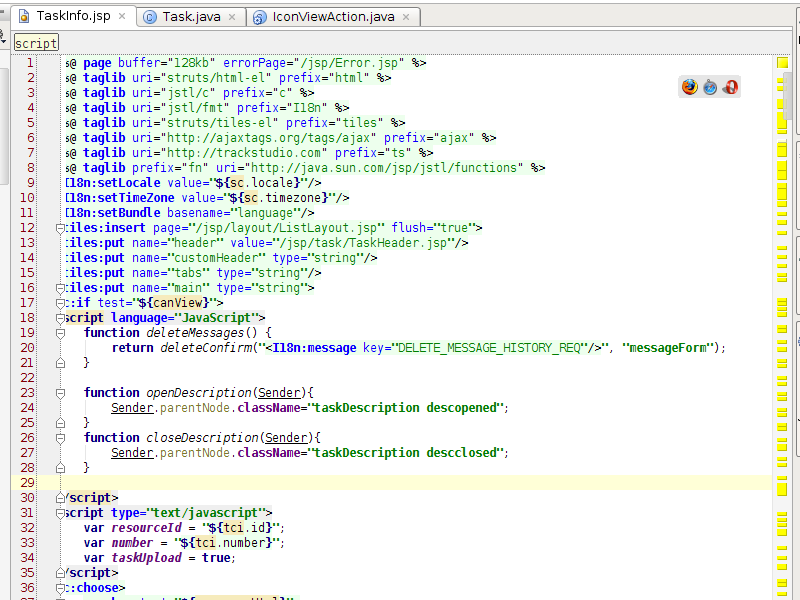
Для отладки кода можно настроить Remote Debug. Для этого:
1.В IDEA перейдите в меню Run->Edit Configuration.
2.Создайте новую конфигурацию. Выберите пункт Remote.
3.Подключите там же файлы исходного кода из модуля TrackStudio.
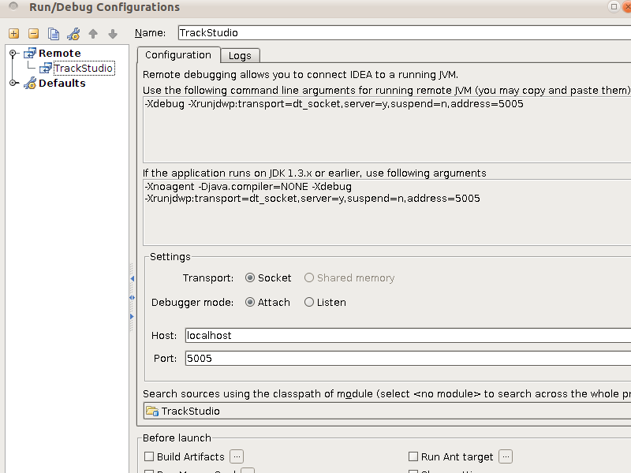
4.Скопируйте строчку в файл startJetty.vmoptions в корне вашего резервного экземпляра TrackStudio
-Xdebug -Xrunjdwp:transport=dt_socket,server=y,suspend=n,address=5005
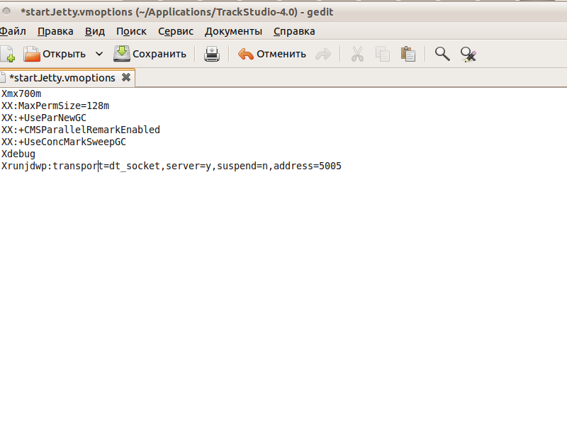
5.Запустите jetty
sh startJetty
6.В терминале должна появиться строчка
Listening for transport dt_socket at address: 5005
7.Перейдите в IDEA.
8.Выберите ранее созданную конфигурацию 'TrackStudio и нажмите кнопку отладки.
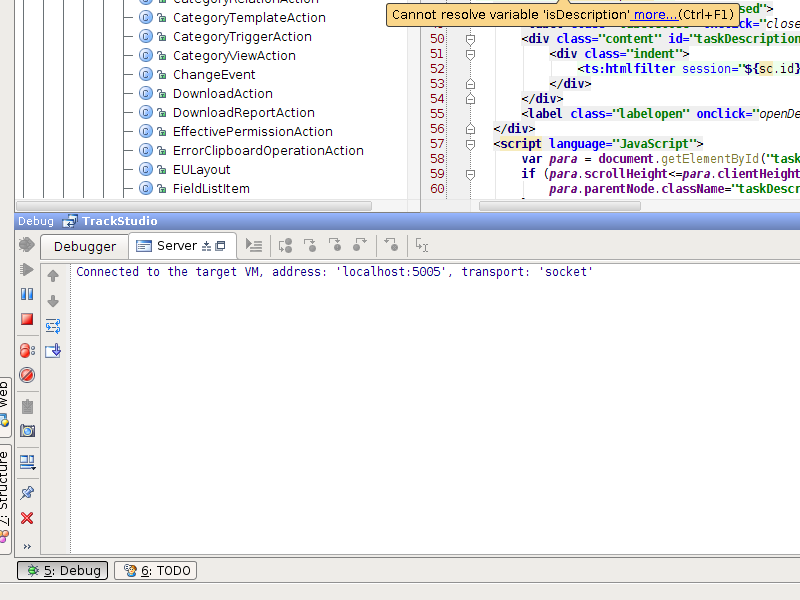
9.Поставьте в нужных вам местах точки останова.
10.Через браузер зайдите в TrackStudio и выполните действия, которые должны привести к останову отладчика в нужных вам точках.
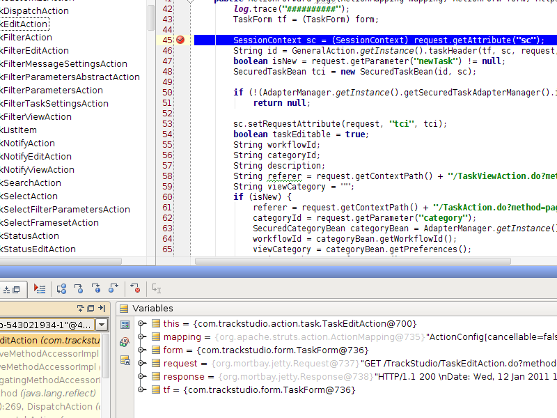
11.Найдите место, где происходит ошибка.
12.Исправьте ошибку.
13.Остановите резервный экземпляр TrackStudio.
14.Перекомпилируйте ваш исходный код по инструкции выше.
15.Снова приступите к отладке.